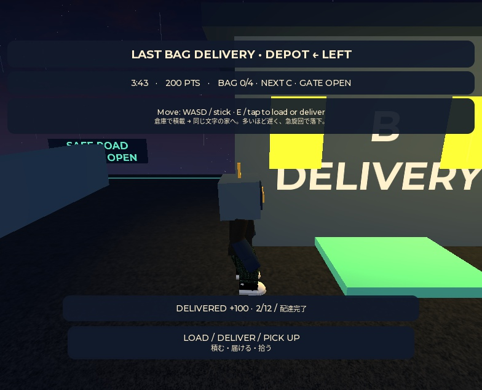

01 / IN DEVELOPMENT限定公開
Last Bag Delivery
最後のひと袋

荷物を積んで、12件の配達へ。たくさん運ぶ効率と、安全に走る余裕。最後のひと袋まで届けるために、積み方を選ぶ短時間の配達ゲーム。
遊び方・操作
WASDで移動。Eキー、または画面上のボタンで荷積み・配達・落とした荷物の回収を行います。4分間で12件の配達に挑戦。
操作の詳細はゲーム内の案内をご確認ください。
テスト状況
ローカル環境で1ラウンド完走・リトライ・再起動後の動作を確認済み。
実機モバイル・ネットワーク環境での検証は未実施。実課金のテストは行っていません。
Robloxで開く ↗
限定公開・アクセス権限が必要な場合があります